Abstract
Fifty Shades of Cel is a real-time non-photorealistic rendering system for 2D/3D hybrid cel shading. Built on top of the HW4 cloth simulator's OpenGL framework, the system combines quantized toon shading, screen-space edge detection, shadow mapping, runtime OBJ mesh loading, split-screen baseline comparison, and interactive GUI controls. The renderer supports both deformable cloth and imported rigid meshes, allowing cel-shaded results to be tested on dynamic scenes with multiple light types, material colors, shadows, and outlines. The final system is designed not only as a shader effect, but as an interactive stylized rendering pipeline for producing and comparing different cel-shaded looks.
Introduction
Cel shading, or toon shading, belongs to the broader area of non-photorealistic rendering, where rendering algorithms intentionally emphasize stylization, shape readability, and illustration-like abstraction rather than physical realism. This style is widely used in games and animation because it combines the geometric flexibility of 3D rendering with visual features associated with 2D art, including discrete shading regions, strong silhouettes, simplified material appearance, and stylized shadows.
This project presents Fifty Shades of Cel, a real-time 2D/3D hybrid cel-shading system built on top of the HW4 cloth simulator's OpenGL framework. The goal is to turn a physically simulated or mesh-based 3D scene into a stylized rendering that supports toon-like lighting, texture-based shadow detail, screen-space outlines, shadows, imported meshes, and interactive visual control.
The final system consists of a multi-pass rendering pipeline. The scene is first rendered with a cel shader that computes quantized lighting bands, pattern-based dark regions, highlights, shadows, and material-aware base colors. The renderer then applies a fullscreen edge-detection pass using depth and normal buffers to produce outlines and internal feature lines. The system also supports shadow mapping, runtime OBJ mesh loading, GUI-controlled presets, and split-screen comparison against a Phong baseline.
Technical Approach
The system is organized around six main components: the render loop and framebuffer pipeline, the cel shader, shadow mapping, fullscreen edge detection, mesh loading, and comparison/user controls.
Render Pipeline
The renderer is driven by the simulator's per-frame draw loop. Each frame updates the cloth simulation when cloth is enabled, updates rotating light parameters when light animation is active, renders a shadow map from the light's point of view, and then renders the visible scene.
The main rendering path uses an offscreen framebuffer object (FBO) that stores color, depth, and packed world-space normal buffers. These auxiliary buffers are necessary because the final outline pass is performed in screen space rather than through explicit mesh-edge extraction. After the scene is rendered into the offscreen FBO, a fullscreen edge-composite pass reads the stored depth and normal textures and overlays detected edges on top of the cel-shaded image.
The system also includes a comparison path. In compare mode, the scene is rendered twice: once with the cel-shading pipeline and once with a Phong baseline shader. The two results are passed to a fullscreen comparison compositor, which can display them using either a movable wipe boundary or a side-by-side layout.
Cel Shader
The cel shader produces the main stylized appearance. The vertex shader computes world-space position, object-space position, world-space normal, and per-vertex diffuse color. The fragment shader begins with a base color, which can be overridden by diffuse material colors loaded from an MTL file. This allows imported meshes to retain part-specific colors while still receiving the same toon-shading treatment.
Lighting is computed using either a directional light or a point light. The shader evaluates
N · L from the surface normal and light direction, remaps this value using a dark
threshold, and quantizes it into discrete bands using floor(). A low band count
produces a classic two-tone cel-shaded look, while higher band counts introduce more discrete
gradation without reverting to smooth Phong shading.
The shader combines several stylization terms. Dark regions blend the base color toward a configurable dark color. Shadowed regions from the shadow map are also blended toward the dark color, so a surface can become dark either because it lies in an unlit cel band or because it is occluded from the light. For imported meshes using MTL material colors, a pattern texture is sampled using a flat object-space XY projection and restricted to dark or shadow transition regions. Finally, a highlight band is added above a configurable bright threshold. The shader writes both the final cel-shaded color and a packed normal buffer for the later edge pass.
Shadow Mapping
The system uses shadow mapping to add spatial structure to the cel-shaded render. Before the main scene pass, the geometry is rendered from the light's point of view into a depth-only shadow framebuffer. During cel shading, each fragment is projected into the light's clip space and compared against the stored shadow depth to determine whether it is shadowed.
Both directional and point lights are supported. Directional lights use an orthographic projection, while point lights use a perspective projection from the light position toward the scene. The implementation uses a slope-scaled bias and a small percentage-closer filtering kernel to reduce self-shadowing artifacts and soften shadow boundaries. The resulting shadow value is integrated into the cel-shading calculation rather than treated as a separate photorealistic effect, so shadows remain visually consistent with the stylized pipeline.
Fullscreen Edge Detection
The outline stage is implemented as a fullscreen post-processing pass. Instead of extracting mesh edges directly, the shader samples neighboring pixels in the depth and normal buffers. Depth discontinuities detect silhouettes, object-background boundaries, and overlaps between objects. Normal discontinuities detect internal feature lines such as cloth folds, creases, and sharp changes in surface orientation.
The edge detector separates depth and normal parameters so that silhouette thickness and internal line sensitivity can be tuned independently. Normal-based edges are down-weighted relative to depth-based edges to reduce noisy interior lines on curved surfaces. A small neighborhood filter suppresses isolated single-pixel artifacts. The final edge mask is then composited over the cel-shaded color buffer using a configurable edge color and strength.
OBJ Mesh Loading and Scene Support
To support more complex final scenes, the system includes an OBJ mesh loader. Scene JSON files can specify a single mesh or an array of meshes, and the GUI can also load OBJ files at runtime. The loader parses vertex positions, normals, UV coordinates, faces, material libraries, and material assignments. Polygon faces are triangulated, scale and translation are applied during parsing, and normals are adjusted for non-uniform scaling.
MTL diffuse colors are loaded and stored as per-vertex colors. The cel shader can then use these material colors as the base color, allowing different parts of an imported model to keep distinct colors while still sharing the same lighting, shadow, and outline pipeline. In addition to imported meshes, the system supports deformable cloth, spheres, planes, and cubes constructed from planar faces.
Interactive Controls and Split Comparison
The system exposes most visual parameters through the Appearance panel. The Cel Shader controls include color palette, dark and bright thresholds, shadow and highlight strength, band count, pattern texture scale, light type, light position or direction, preset saving/loading, and HLSL export. The Edge controls include edge enable/disable, depth and normal thickness, thresholds, strength, and color. The Mesh controls support runtime OBJ loading, scaling, translation, friction, collision toggling, and deletion of runtime-loaded meshes. The Compare controls enable split-screen visualization against the Phong baseline.
Problems Encountered
One challenge was that the final appearance depended on several rendering components working together rather than on a single shader. Cel shading, shadow mapping, edge detection, mesh loading, and comparison rendering all had to be integrated into the same frame loop, so changes in one part of the pipeline could affect the behavior of another. For example, lighting and shadow parameters influenced the strength of the toon bands, while the depth and normal buffers produced by the first pass directly affected the quality of the screen-space outlines. Another challenge was parameter tuning across different scene types: values that worked well for simple spheres did not always work well for folded cloth or imported OBJ meshes, so edge thresholds, shadow strength, band count, pattern scale, and color choices often needed scene-specific adjustment.
Lessons Learned
The project showed that stylized rendering depends heavily on pipeline organization and visual iteration. Separating the cel shader from the edge-detection pass made the system easier to reason about, because lighting, shadows, material colors, silhouettes, and internal feature lines could be adjusted more independently. We also learned that interactive controls are especially important for non-photorealistic rendering: unlike physically based rendering, cel shading depends on subjective visual choices such as band count, outline strength, shadow treatment, and color palette. Exposing these parameters through the GUI made it easier to explore different looks and adapt the same pipeline across multiple geometry and lighting conditions.
Results
The final system produces cel-shaded renderings across several scene configurations, including primitive geometry, deformable cloth, imported OBJ meshes, shadowed scenes, and animated comparison demos. Since this project focuses on visual stylization rather than a predictive task, the evaluation is primarily qualitative: we organize our results around baseline comparison, component ablations, style exploration, and complex-scene coverage.
Baseline Comparison
The primary visual baseline is the same scene rendered with a Phong-style shader. The examples below compare the baseline and final output across three scenes using the complete cel-shading pipeline, including quantized lighting, shadow-aware darkening, pattern textures, and screen-space edge detection.
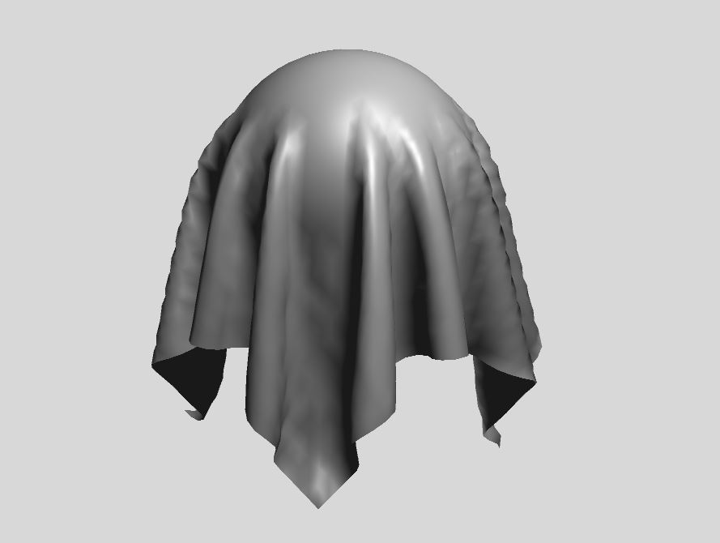
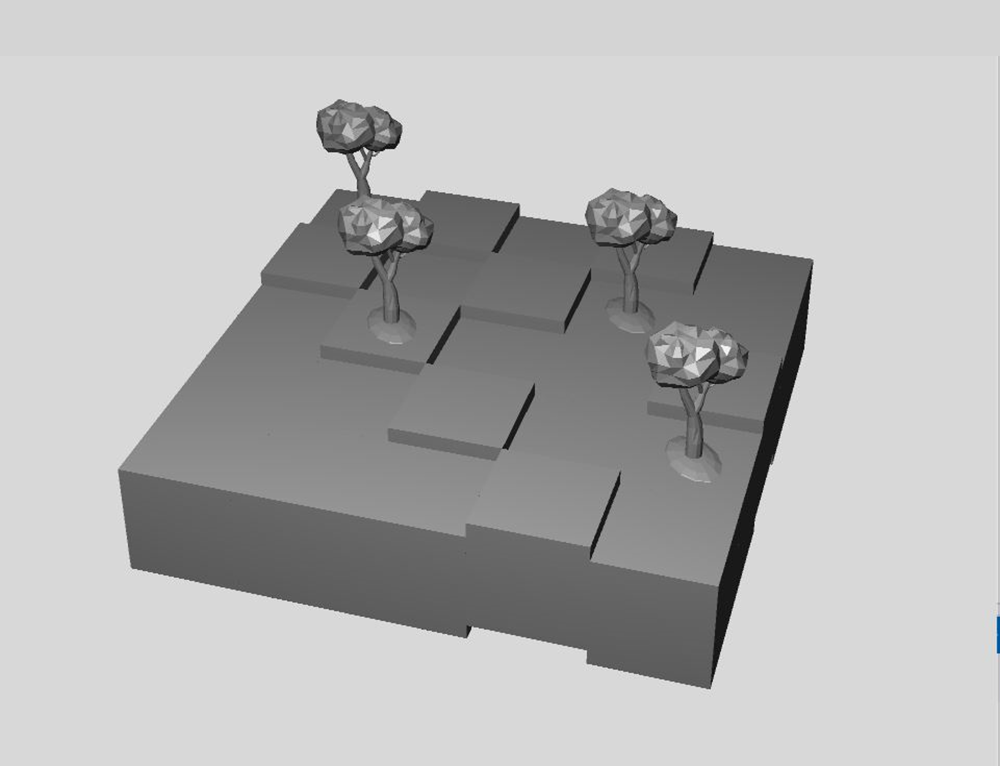
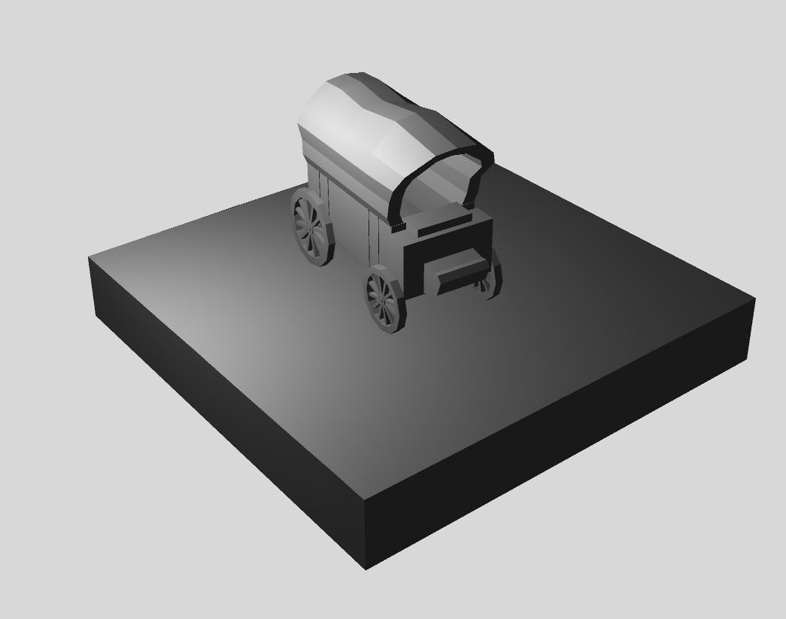
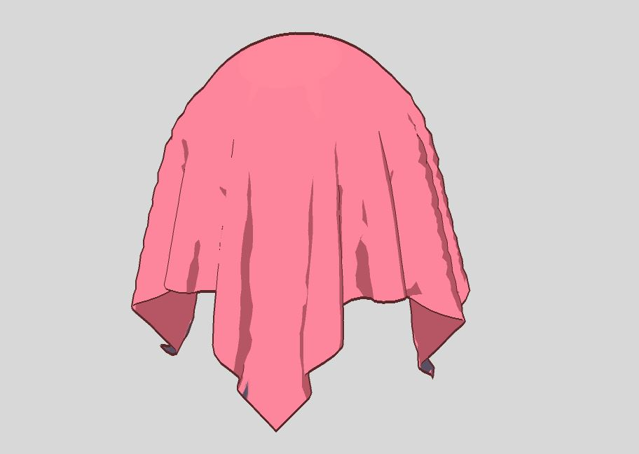
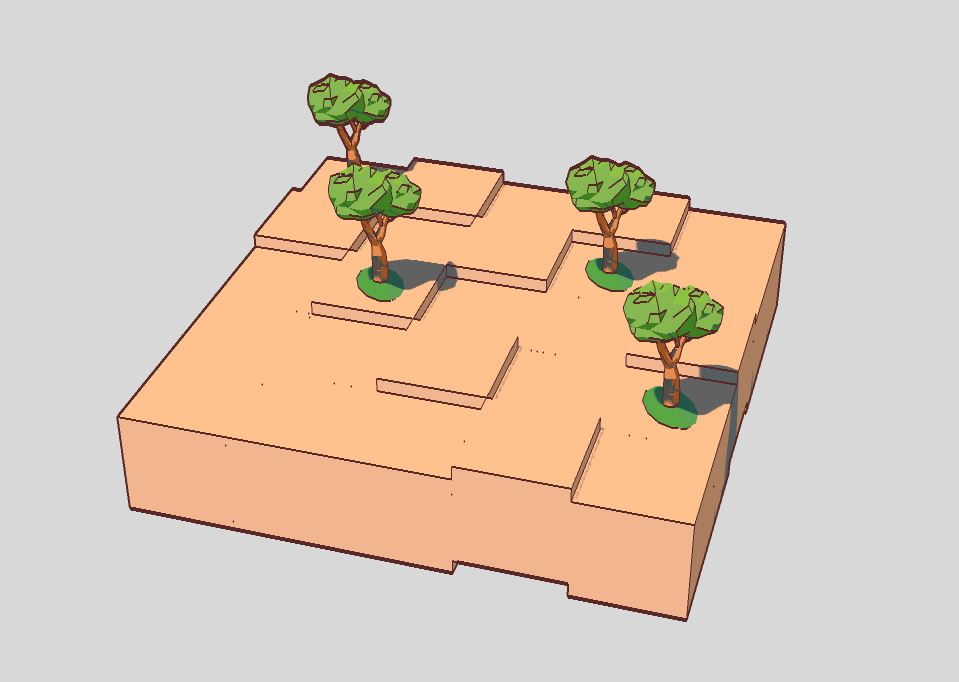
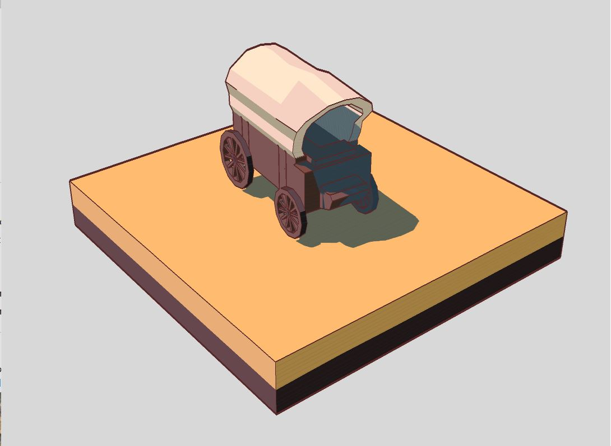
Compared with the Phong baseline, the cel-shaded outputs appear flatter and more graphic. The screen-space outlines improve shape readability, while banded lighting and shadow treatment push the result toward a 2D illustration style.
Component Ablations


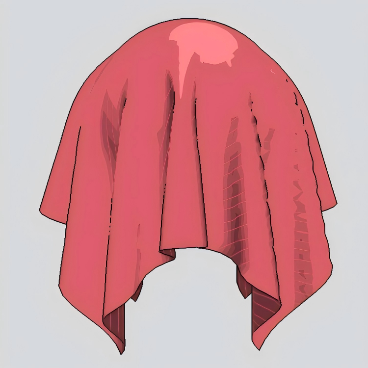
Style Parameters and Presets
Beyond binary ablations, the renderer can be tuned as an artistic system through GUI parameters. Pattern scale controls the density of texture detail in darker regions, while the color palette changes the base, dark, bright, and edge colors without modifying the underlying shader implementation.
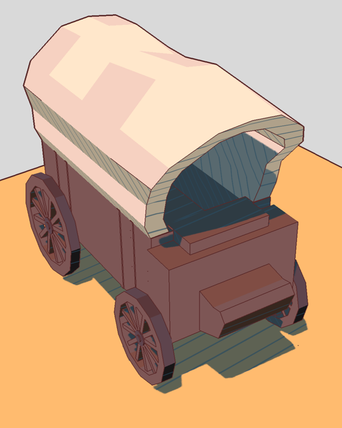
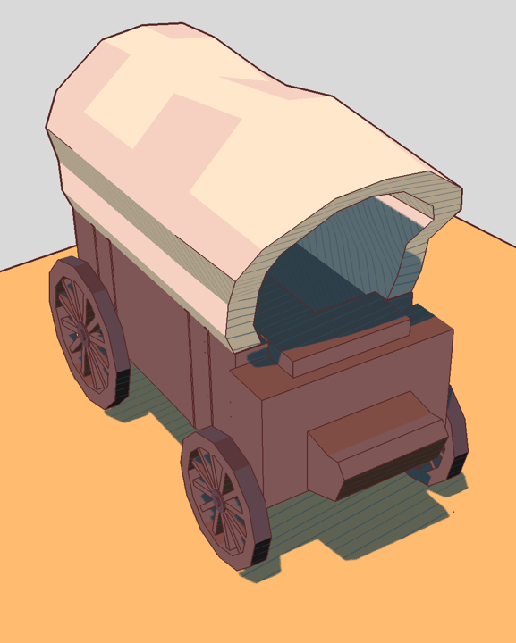
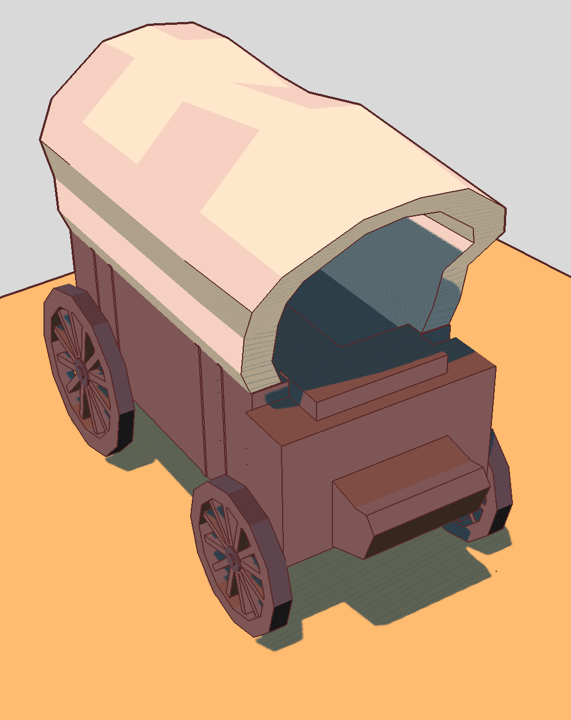
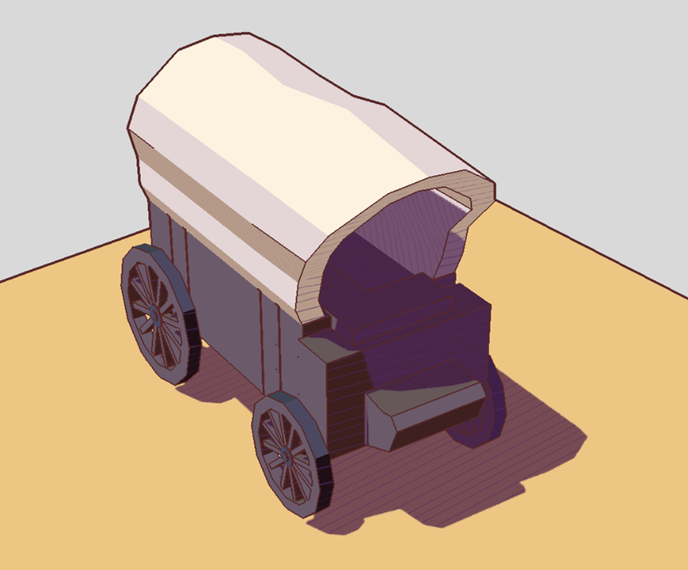
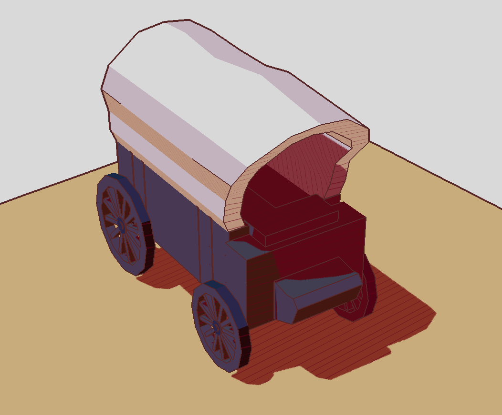
Lighting, Shadows, and Complex Scenes
Shadow mapping and animated lights add spatial structure to the stylized output. Unlike a photorealistic shadow, the shadow value is folded into the toon-shading model by darkening occluded regions toward the stylized dark color, preserving visual consistency with the cel-shaded pipeline. The rotating-light demo confirms that lighting is not baked: the quantized bands and shadows update dynamically as the light moves.
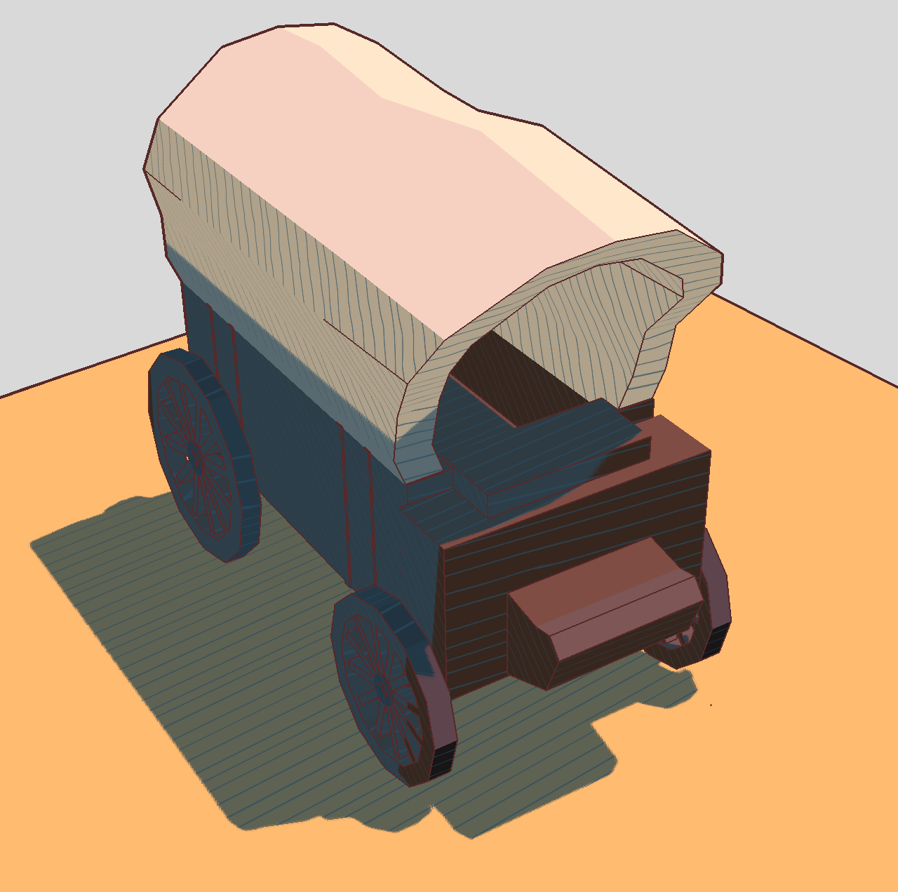
Scene Coverage and Runtime
The renderer is tested on primitive scenes, deformable cloth, imported OBJ meshes, overlapping objects, and animated scenes. This coverage matters because cel shading and screen-space outlines can behave differently on simple curved primitives, folded cloth, and complex silhouettes from imported meshes. The results show that the same pipeline applies across these scene types, although parameters such as edge threshold, shadow bias, and pattern scale may still require per-scene tuning. The system remains interactive in all tested demos, including the full pipeline with shadow mapping, edge detection, and split-screen comparison running simultaneously.
Final Video
Discussion and Conclusion
The project demonstrates that a relatively compact set of rendering passes can produce a flexible cel-shading system. Separating the cel shader from the edge-detection pass makes each effect independently tunable, and exposing parameters through the GUI allows rapid style exploration without recompiling shaders.
The main limitation is that style parameters still require per-scene tuning: edge thresholds, shadow bias, pattern scale, and color palettes may need adjustment when moving between cloth, primitives, and imported meshes. Mesh loading currently supports only diffuse material colors from MTL files, and collision handling is not optimized for large imported models.
Future work could address these limitations by supporting richer material maps, adding adaptive parameter defaults based on scene statistics, improving line-weight control and antialiasing, and conducting systematic performance benchmarks across varying triangle counts and scene complexity.
Contributions
| Team Member | Contributions |
|---|---|
| Kevin Frans | Rendering extensions and final demo scenes, including shadow support, lighting animation, overlapping-object examples, and complex scene setups. |
| Qijun Li | Final report and project webpage content, including technical writing, result organization, and paper structuring and formatting. |
| Shaoyi Wang | Core rendering system, including the cel-shading pipeline, edge-detection pipeline, GUI controls, implementation reference, and user guide. |
| Tao Sun | Core project implementation and final deliverables, including system integration, webpage setup, demo/video preparation, and final presentation coordination. |
References
- Gooch, A., Gooch, B., Shirley, P., and Cohen, E. A Non-Photorealistic Lighting Model for Automatic Technical Illustration. Proceedings of SIGGRAPH 1998, pp. 447–452, 1998.
- Lake, A., Marshall, C., Harris, M., and Blackstein, M. Stylized Rendering Techniques for Scalable Real-Time 3D Animation. Proceedings of the First International Symposium on Non-Photorealistic Animation and Rendering, pp. 13–20, 2000.
- Phong, B. T. Illumination for Computer Generated Pictures. Communications of the ACM, 18(6), pp. 311–317, 1975.
- Williams, L. Casting Curved Shadows on Curved Surfaces. Computer Graphics, 12(3), pp. 270–274, 1978.
- Reeves, W. T., Salesin, D. H., and Cook, R. L. Rendering Antialiased Shadows with Depth Maps. Computer Graphics, 21(4), pp. 283–291, 1987.
- Saito, T., and Takahashi, T. Comprehensible Rendering of 3-D Shapes. Computer Graphics, 24(4), pp. 197–206, 1990.
- DeCarlo, D., Finkelstein, A., Rusinkiewicz, S., and Santella, A. Suggestive Contours for Conveying Shape. ACM Transactions on Graphics, 22(3), pp. 848–855, 2003.
- Frans, K., Li, Q., Wang, S., and Sun, T. CS284A_50CelShades Project Repository.